Starter Guide
If You have just downloaded the game or You still are downloading it and want to have a good start, this guide is for You! The first thing You should do is register on the website :
-- PIN Code --
After that, You should log in on the website and set up Your PIN code.
Your PIN code is composed by 9 numbers, don't forget it! We will need it soon... To set up Your PIN code just
log in, and the pop-up will show up. Be aware, it might not let You to make this code too easy!
-- Making your first character --
When Your account is ready You can open the game by opening the NosVoid.exe and log into the game with the account You created. It's time to make Your first character. Simply create it as You do in normal NosTale. When You try to enter the game with Your new character, this is the time to write Your PIN code. You have to enter it from time to time. After finally getting into the game, You will appear on this map :

-- First Map --
Here You can craft Yourself one pet and one partner. Choose wisely!
But don't be worried about the choice, they do have very similar stats, but keep in mind, for now there is no
way to get back to this area, so You should choose now. After(or before) You have crafted Your partners for the
adventure, You can change Your class to either: Mage, Archer ; Warrior or Martial Artist ,to do that, You need
to unequip Your current items You received, and talk to the NPC in the middle of the room and choosing the
dialogue "Job Change
-- NosVille --
After choosing the class, You can leave the room by entering the portal.
You will be teleported to the main town. It's NosVille, You can get there anytime by using one of the commands:
$home all of them are listed in players command channel. But for now, let's take a short trip to the useful NPCs
for the early game. You got some gold from the game and don't be worried to spend it, since You will soon start
earning a lot more! Firstly, we should visit Starter Pack NPC:

You can also notice, that we received a medal for the reputation. You can use it freely. In here we can buy better equipment. The first SP card, fairies. Arrows if needed , but don't buy too many yet! We have some shopping to do and its quite expensive for now. I would recommend You buying some Seed of Power though, they might come in handy in some situations, 200 should be more than enough. But wait... We've crafted our partners and they're not here. Let's fix it by going here:

This is the portal to the Miniland Both NPCs sell useful stuff for the pets, but We don't need any of that for now. Just enter the portal, use items You crafted on the first map(They should be in the "Equip" tab) and You can make them follow You by using the "Company" button, after targetting them. Now let's continue our shopping trip and let's go to the Resistance shop:

We can't wear them now, but the levels are going to rain soon, so it will sustain our survivabilty while the levels go on, it will be nice to already have them in our inventory, they might chunk our savings, but don't be worried about that. I don't know how about You, but this is the time for me to get already annoyed with how much I can walk "by foot" in this game. Let's get ourselves a nice Mount to speed things up! Mount shop:

I recommend you buying one for now, You will be able to change it later on. You can set it on Your skill bar by going to Main in Your inventory and just moving it there. There are some bonuses we can still acquire. Let's go to the Costume Shop:


There are two shops for costumes. Keep in mind that the bonuses may differ between the costumes. Choose Yours and let's move to the Map portals:

As you can see there are two portals. For now it is better to visit Lvl Area since we want to have better equipment:

Note: Buying 'Starter Pack' from NosVoid store will make the process of leveling much quicker and easier, as you
receive all possible boosts, partners and costumes.
https://nosvoid.com/shop/
Level 1-99
We can start our Levelling Journey by entering 'Lvl Area' and then 'Beginner Map' located on the screens below.


-- Maps --
We will have 3 different maps to choose from, enter the map with Level cap you currently on. For example we
start on 15-40 map but once we hit Lv40 we will move on to the next map.
This will speed up the levelling process as the monsters get stronger on higher level maps and therefore give
more experience.
TIP: Use 'Ancelloan's Blessing' to increase Experience gain by 100% for 1H!

-- Equipments --
While you progress with levels you will receive new equipment on Level 40, 60 and 99.
Equip them when you
reach
the required level to wear them, as they will help you survive and deal more damage to monsters.
NOTE: Make sure to not delete/sell this equipment because you will still use it on further prestiges.
-- Max level --
Once you reach Level 99 you will have some 'Black Slate' dropped from monsters across all maps. These are used
to craft items in the Beginner Map but what we will focus on is crafting as many Ancelloan's Blessing and Fairy
Boosters in the NPC located on the right side of Beginner Map. We also dropped a good amount of gold which we
will use to get equipment from the 'Starter Pack : PvE Equipments' NPC located in the middle of NosVille. You
can fast travel there using command $home in general chat.
TIP:
Use various commands to get around NosVoid quicker and buy items like potions/arrows anywhere you like!
You can find the whole list of commands by typing $help in general chat in game.

-- Better equipments --
From the 'Starter Pack: PvE Equipments NPC' get yourself the equipment for your class. These items are extremely
useful throughout the entire levelling process because of the shells these equipment already have. Once bought,
equip them, you will use this equipment until the end. Looking at the Shells we have on the weapons, we can see
we have Overall SL:9, SL Damage and SL Property:14.
For Archer/Swordsman and Martial Artist the recommended SP Point distribution is 100/x/73/x
And for Mage its 69/x/100/x
Add the points to your specialist, and confirm by using Decision button. The Prestige maps will be a little bit
harder and therefore we will need resistances to survive, you can buy them from 'Resistance' NPC found on the
left side of NosVille. Buy all of them as every monster has different elemental attack and we will have to swap
the resistances according to monsters element.

-- Upgrading our prestige --
NosVoid has a prestige system, which means you reset your characters level to gain buffs and progress further into the game. We can Prestige by heading over to 'Farm Prestige' map and killing monsters to gain 'Material' which we then use to craft 'Prestige Item'. You will need 45 Materials to craft 1 Prestige Item, my suggestion would be to farm enough Materials to craft 8 Prestige Items at once so you dont have to go back there again. To craft all you will need to collect 360 Materials, but if you have extra gold you can also buy Prestige Item in NosBazar.
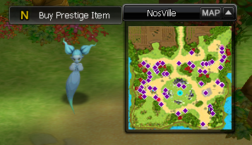
once you hit the max level for a particular prestige, you will have to use the Prestige Item to progress into
the next prestige level.
NOTE: you have to unequip every item and go to NosVille before using the Prestige Item.
Prestige 1
We start Prestige 1 on character Level 50. You will need to use Level 46 equipment obtained before and head over
to Prestige 1 map using the command $warp p1.
You also receive some Prestige Boxes, some useful items can
be
found inside.
-- 50-85 --
Start killing monsters found across the map and reach Level 85. Remember to always use Ancelloan's Blessing when
leveling they are easily obtainable and will make leveling faster.
Once you hit 85 use $warp p1 to go back
to
the start and enter 85-99 Map.

-- 85-99 --
On this stage we need to reach Level 99 but we can also find a mini-boss that will give us books that will increase our passive stats. You won't be able to use them now, but keep it for the future levels.
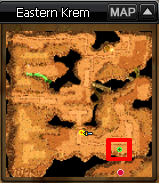 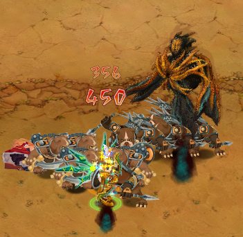
Reaching max level on this prestige will take some time, but by killing monsters you will collect a decent
amount of gold which you can use to further upgrade your SP. In my opinion the best SPs to use for each class
during levelling are;
Archer - Wild Keeper SP4
Swordsman - Berserker SP4
Mage - Ice Mage SP3
You can get all of these SPs by going into maps located at the bottom of NosVille and killing the class monster
you want the SP for.
Once you obtain your SP we will need to gain some Job Level to upgrade our SP, easiest way to do that on our
level is going to $warp beginner and entering 65-99 Level map.
Kill some monsters to gain Job level and
when you
hit 60-70 Job Level use $home to go back to NosVille. Dont forget to distribute the SP points again!!
-- Upgrading your SP --
Why do we need to upgrade our SPs? Upgrading SPs will give us a massive boost in damage by giving us more SP
Points to distribute in Attack/Defence/Element/HP.
We need several materials to upgrade SPs. All can be obtained in the map 'Farm Area'. Lower and Higher SP
Protection Scrolls will also be needed to upgrade the SPs you can buy them from 'Alchemist' NPC and from other
players using NosBazaar.
-- Getting materials --
Every material will drop from its own designated room. For example Full Moons drop only on the right side,
Angel's Feathers on top and Souls on the left. My recommended amount to drop of each material currently
is:
Angel's Feather - 5000
Full Moon - 2500
Each of soul - 30

For now we will only focus on upgrading the SP to +9-11 as anything higher can take a lot of gold. You can
easily obtain some extra gold by attending Instant Combat event.
Use Lower SP Protection Scroll and drag the SP to the top slot and click 'Starting upgrade'.
NOTE
That with each
upgrade the success rate will be lower and more materials will be needed to attempt an upgrade.

-- Passive Skills --
After you done upgrading your SP go back to $warp p1 and visit High Passive Skills NPC to train all passive skills.

With successfully upgraded SP and trained passive skills we can finally move on to Prestige 2. Take off all equipment and use Prestige Item.
Prestige 2
Prestige 2 we start on level 99 (+1) and here we unlock a new Level system called Champion Level, and this will be our main focus from now on. Head over to $warp p2 and enter 1-10 Hero Map.

-- Title --
With the current strength of our character we are easily able to level from 1-25 hero level without changing
anything.
I will advise to drop 20x Golden Leaf from Prestige 2 maps in order to craft the Title.
You can find
the NPC at the bottom of the map. The title is extremely helpful to get, as it gives us additional dmg and
Increased experience gained by 10%.
Double click the title in inventory and equip it by going to 'P' > Titles and ticking the box near the title.
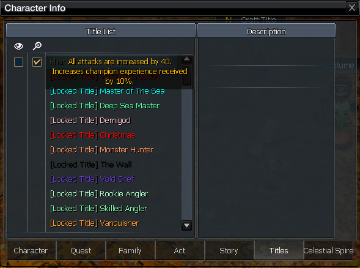After the Title is crafted we are ready to move on to Prestige 3, take off your equipment and double click Prestige Item.
Prestige 3
Prestige 3 we will be starting on level 99(+1) and the max level we need to reach is 99(+30). This should be as easy to do as Prestige 2 was, but if you look around the Prestige 3 map you will see Inventory Expansion and Faster Mount NPCs and we will be aiming to reach enough materials to craft both at the end of levelling process.

-- Refilling your inventory --
Whenever you run out of Ancelleon's Blessing or Fairy Boosters you can always use command $warp beginner to come back and craft some more. You also could be running low on Divine Recovery Potions, you can use $home command and head over to Potion NPC to get some more. You can also grab a few Experience Potions, this will speed up experience gain even more, but be careful not to die as you will lose the effect.
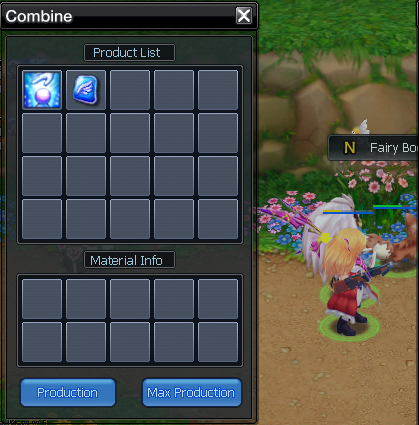
TIP: You can also get familiar with command $buy as you can buy certain items anywhere you like. If you
would like to know the full list write $buy list.
If you would like to buy for example potions, do $buy potion [amount]
-- Perfection --
At this stage before going into Prestige 4, you can go to $warp raidarea and find a team that will host some
Maru raids. From the boxes received from completing the raid you will receive item called Perfection you can
exchange this item into any SP1 to SP8 Perfection you desire and use it to upgrade your SP. For more information
you can visit https://wiki.nosvoid.com/sp-perfection.
Now you are ready to go to Prestige 4.
Prestige 4
We start Prestige 4 with level 99(+1) and we need to reach 99(+35) to progress into P5.
-- NPCs --
When you look around the $warp p4 map you will notice some NPCs with craftable items.
What you need to
focus on
is getting enough materials to craft Weapon Skin and Fire Devil Set, this will require you to drop 80 Draco
Claws.
Weapon skin when equipped will give you extra experience gain and costume set will give you more
damage,
which again will make it easier for you to reach max level as soon as possible.
-- Books --
During leveling you will encounter Satan's Lapdog that will drop books to increase passive stats of your character, try killing him 2/3 times to get every book necessary. You can also relog on different channels so you don't have to wait for him to spawn.

This is a list of all books that you should have, if not all dropped keep trying!

Prestige 5
We start Prestige 5 on level 99(+1) and we will need to reach Level 99(+50) to prestige further.
-- Fernon Raids --
With the current level we are able to join Fernon Raids that will give us Fernon's Egg each time we complete the
raid.
We need them to craft High Tier Mother Rune (Green) which will increase the experience gain by 40%
for 1h
and a Fernon Fairy to further increase our damage
If you have spare gold you can also use it to buy Fernon's Egg from Bazaar.
My suggestion is to get x20
and
getting x2 Green High Tier Rune, this will increase experience but also the gold collected by 40% and the gold
spent will be refunded from levelling.
-- Events --
Reminder to always do all Instant Combat and Color PvP when you have the chance to.
From Instant Combat
you can
receive 185KK of pure gold and Acorns which you can exchange for a PvE weapon skin that will increase your dmg
in Raids.
From Color PvP you will receive Broken Heart of Belial for a loss and Heart of Belial for
a win.
We
will use them later to craft C60 Equipment.
Once you reach the maximum level for Prestige 5 make sure you use all books you have collected because the extra stats you receive from them will be carried over when you prestige again.
Prestige 6
For Prestige 6 there is no crafts we can do, so the main goal is to reach max level for this Prestige, which is 99(+50).
-- Books --
You will also need to kill Thousand-Year-Old-Mandra that is located in 45-55H Map. Kill the boss a few times to gain every book that will increase your character basic stats.
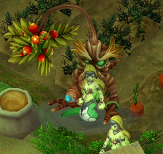This is the list of books droppable from this boss, if you dont have all of them yet. Make sure to kill the boss a few more times.
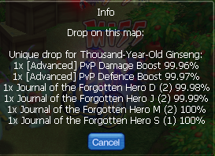-- Upgrading your SP --
It might be a little more harder to kill mobs at the 45-55H Map. What you can do to improve that is upgrade your
SP all the way to +15. By upgrading the SP this will allow you to distribute more points in SPs therefore making
your character stronger.
I would also recommend to do perfections for the SP you chose as it will give you a massive damage boost while
wearing the SP.
Prestige 7
In Prestige 7 we have a lot of new content, we won't cover all of them at the moment as they are not necessary in our levelling process. Instead I will cover it later on in the guide when we start to collect materials required for our new C60 equipment.
-- Buffs --
In the middle of P7 map we will find 2 different Marto's Buffs.
The Marto's Buff gives us a 40% boost in
experience gain (Use it wisely as you can only use it once every 24H!). The Marto's Buff [P7] will give us every
possible buff from other SPs.
In Prestige 7 we will need to reach level 99(+60).
To do that, we will have 6 maps to use, each with
different
level requirement. During our long levelling process, you will drop 2 new items: Gold Coin and Broken
Fang.
Gold
Coins we can sell to any NPC for extra gold, and Broken Fang we can use it as a material in P7 Tower crafting.
-- Tower game --
Tower is a game you can do with unlimited tries, the main reward upon finishing the tower is Tower Metal which
you then can use to craft C60 Equipment.
To complete the tower you need to kill all monsters on all 25
floors.
You need to kill them before timer runs out, otherwise you will fail and have to start again.
-- Raids --
In P7 we also can find 2 new raids Kirollas that drops C55 Armor and Pure Beast that drops Main Weapon and
Secondary Weapon, you can sell equipment dropped to any NPC for extra gold.
If you are tired of levelling,
you
can join someone else's team to drop C55 Equipment and try your luck in dropping Pure Beast Soul/Body or
Kirollas Soul/Body which will be needed in the late game.

-- Daily quests --
Before starting with P7 raids grab Daily Quests and start collecting Random Amulet Boxes (Raid Quest).
Each box
contains 4x Champion Blessing Amulet (Random) and will be used in getting our new shells in C60 Equipment.
There
are many more Daily Quests found around NosVoid and as a starting player you want to complete all of them
everyday to sell or use for yourself.

Prestige 8
We start Prestige 8 on level 99(+1) and we will need to reach Level 99(+60) to prestige further.
-- Buffs --
We can use Marto's Buff to get an additional 40% experience gain and if you haven't used Prestige 7 Marto's
Buff, you can use it now together with the Prestige 8 buff.
Each map has a different level requirement,
once you
reach it, move to the next map to gain experience faster.
During the leveling process you will start
to drop
Ancient Orc Gold Coin and Broken Orc Weapon, you can use them as material in the Craft Stuff NPC found at the
bottom side of Prestige 8 map.
-- C60 Equipments --
Once you are done with leveling your character to Prestige 8 Level 99 (+60), you are ready to focus on crafting
your first C60 equipment, to collect all materials you will need to do various content.
- Paimon Raid for Paimon's Cursed Soul
- Belial Raid for Broken Magic Sword of Belial
- Prestige 8 Time Space for Fernon's Energy
- Prestige 8 Hardcore Daily Quest for Dragon's Wing
- Prestige 7 Tower for Tower Metal
- Caligor for Holy Light
- Color PvP for Heart of Belial/Broken Heart of Belial
Some items are untradeable (Tower Metal, Dragon's Wing, Fernon's Energy) but the rest of the items can also be
obtained from other players or NosBazaar.

-- Daily Quests --
During the crafting process you can accept Daily Quests for Random Amulet Boxes which you will need to roll
shells on your new C60 Equipments.
From one of the daily quests you can also obtain Soul Silver (Paimon
Raid)
and Brass Coin (Belial Raid) which will be needed to craft various items in Craft Stuff NPC.

-- Craft NPC --
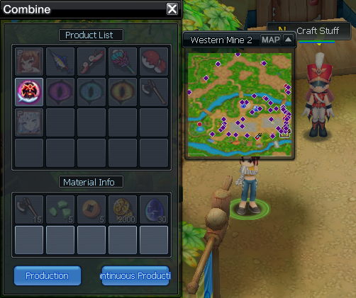Prestige 9
After using Prestige Item on Prestige 8, you will get 99(+50) Prestige 9.
-- Exp --
The next and most important step will be reaching the max level (+70). You can do it on the Land of Death, located on the right side of the minimap. Remember that to be able to enter LoL you need to be a family member.

The rotation during leveling is very simple, you just lure the whole map, and at the end you kill a huge lur. I recommend taking one of the older existing pets with you (e.g. Flame, Enkidu) because they just gained some changes and are able to tank such lur without much problems.
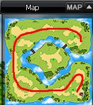-- C70 Equipments --
After reaching c70, your next step should be crafting c70 eq.
Mats you will need:
-1 part eq c60
- Vengful Draco Horn - obtainable from Caligor's Gucci Box and Asgobas IC box
- Angelic Horn - obtainable from Caligor's Gucci Box and Asgobas IC box
- Dragon Rock - obtainable from Asgobas IC box
- Dragon Crystal Weapon - obtainable from Valehir's Raid Box or buy in NB
- Dragon Secondary Weapon Crystal - obtainable from Alzanor's Raid Box or buy in NB
- Dragon Crystal Armor - obtainable from Black Hand Raid Box or buy in NB
- Blacksmith Medal - crafted from the Gold Medal in the arena, which you can get from AoT or buy in NB
You also need new jewlery.
Mats you will need:
- Draconian Spirit - crafted from the Gold Medal in the arena, which you can get from AoT or buy in NB
- Draconian Body - crafted from the Gold Medal in the arena, which you can get from AoT or buy in NB
- Draconian Memory - crafted from the Gold Medal in the arena, which you can get from AoT or buy in NB
- Dragon Crystal Equipment - obtainable from P9 Raid Boxes
- Gold Medal - obtainable from AoT or buy in NB
- Dragon Bone - obtainable from Caligor's Gucci Box
- Monster Hand - obtainable from Black Hand Raid
- Alzanor's Tail - obtainable from Alzanor Raid
- Valehir's Wing - obtainable from Valehir Raid
You can get Cellon 11 for new jewlery from Asgobas IC.
-- Void Gods Storyline and SP10 --
While obtaining materials for new equipment, it is very important to start doing the Void of Gods Story Line, which is located in the lower right corner of the map Choose one of several paths to get a unique buff. Buffs are described here. After completing 5 quests you will receive a buff, and after the 6th quest you will receive SP10.

You also can craft SP10 on P9 map in Specialist 10 NPC.
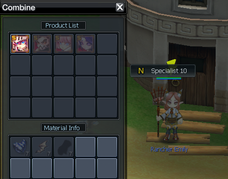-- Weekly Quests --
An additional activity you should do while getting a new eq are the weekly quests you can get from the Daily Quest NPC and the Lottery Instant Combat NPC. Completing "Participate in certain events" will give you expensive mats, needed to make carves in armours.
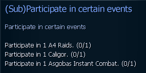
For "Kill monsters in Asgobas Instant Combat" you will get a special Ticket that allows you to craft a box where you can get very valuable items.
-- Sp10 Perfection Stones --
From P9 raids you can get bags of new SP10 Perfection Stones which you can exchange for Perfection Stones at the Aros' Perfection Exchange NPC. You can also obtain these bags by exchanging Dragon Crystal Equipment at Centaur's Exchanger NPC.